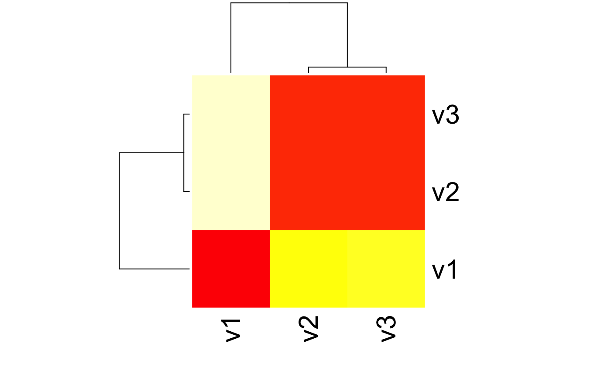

This function computes a divergence matrix or divergence value based on the Jensen-Shannon Divergence with equal weights.
Please be aware that when aiming to compute the Jensen-Shannon Distance (rather than Divergence), you will need to apply the link{sqrt} on the JSD() output.
JSD(x, test.na = TRUE, unit = "log2", est.prob = NULL)a numeric data.frame or matrix (storing probability vectors) or a numeric data.frame or matrix storing counts (if est.prob = TRUE). See distance for details.
a boolean value specifying whether input vectors shall be tested for NA values.
a character string specifying the logarithm unit that shall be used to compute distances that depend on log computations.
method to estimate probabilities from input count vectors such as non-probability vectors. Default: est.prob = NULL. Options are:
est.prob = "empirical": The relative frequencies of each vector are computed internally. For example an input matrix rbind(1:10, 11:20) will be transformed to a probability vector rbind(1:10 / sum(1:10), 11:20 / sum(11:20))
a divergence value or matrix based on JSD computations.
Function to compute the Jensen-Shannon Divergence JSD(P || Q) between two probability distributions P and Q with equal weights \(\pi_1\) = \(\pi_2\) = \(1/2\).
The Jensen-Shannon Divergence JSD(P || Q) between two probability distributions P and Q is defined as:
$$JSD(P || Q) = 0.5 * (KL(P || R) + KL(Q || R))$$
where \(R = 0.5 * (P + Q)\) denotes the mid-point of the probability vectors P and Q, and KL(P || R), KL(Q || R) denote the Kullback-Leibler Divergence of P and R, as well as Q and R.
General properties of the Jensen-Shannon Divergence:
1) JSD is non-negative.
2) JSD is a symmetric measure JSD(P || Q) = JSD(Q || P).
3) JSD = 0, if and only if P = Q.
Lin J. 1991. "Divergence Measures Based on the Shannon Entropy". IEEE Transactions on Information Theory. (33) 1: 145-151.
Endres M. and Schindelin J. E. 2003. "A new metric for probability distributions". IEEE Trans. on Info. Thy. (49) 3: 1858-1860.
# Jensen-Shannon Divergence between P and Q
P <- 1:10/sum(1:10)
Q <- 20:29/sum(20:29)
x <- rbind(P,Q)
JSD(x)
#> Metric: 'jensen-shannon' with unit: 'log2'; comparing: 2 vectors
#> jensen-shannon
#> 0.03792749
# Jensen-Shannon Divergence between P and Q using different log bases
JSD(x, unit = "log2") # Default
#> Metric: 'jensen-shannon' with unit: 'log2'; comparing: 2 vectors
#> jensen-shannon
#> 0.03792749
JSD(x, unit = "log")
#> Metric: 'jensen-shannon' with unit: 'log'; comparing: 2 vectors
#> jensen-shannon
#> 0.02628933
JSD(x, unit = "log10")
#> Metric: 'jensen-shannon' with unit: 'log10'; comparing: 2 vectors
#> jensen-shannon
#> 0.01141731
# Jensen-Shannon Divergence Divergence between count vectors P.count and Q.count
P.count <- 1:10
Q.count <- 20:29
x.count <- rbind(P.count,Q.count)
JSD(x.count, est.prob = "empirical")
#> Metric: 'jensen-shannon' with unit: 'log2'; comparing: 2 vectors
#> jensen-shannon
#> 0.03792749
# Example: Divergence Matrix using JSD-Divergence
Prob <- rbind(1:10/sum(1:10), 20:29/sum(20:29), 30:39/sum(30:39))
# compute the KL matrix of a given probability matrix
JSDMatrix <- JSD(Prob)
#> Metric: 'jensen-shannon' with unit: 'log2'; comparing: 3 vectors
# plot a heatmap of the corresponding JSD matrix
heatmap(JSDMatrix)
